GILE DOCUMENTATION
Getting Started
Your ultimate guide to surviving your first days, gathering Primogems, and uncovering the secrets of the GILE mod.
Recommended size: 800x400px. Showcases early-game survival alongside mod features.
1. Step One: Basic Survival & Iron Gear
Before diving deep into the expansion's mechanics, treat GILE like standard vanilla survival. Get yourself a secure house, a steady food supply, and basic iron-tier gear.
Why iron? Because the core resource of the entire mod requires at least an iron pickaxe (or better) to mine effectively.
2. Finding Primogem Ore
Once your basic setup is ready, keep an eye out for the mod's primary resource: Primogem Ore. It comes in three natural variants across your world:
- Overworld Variant (Standard Primogem Ore)
- Deepslate Variant (Deepslate Primogem Ore)
- End Variant (End Primogem Ore)
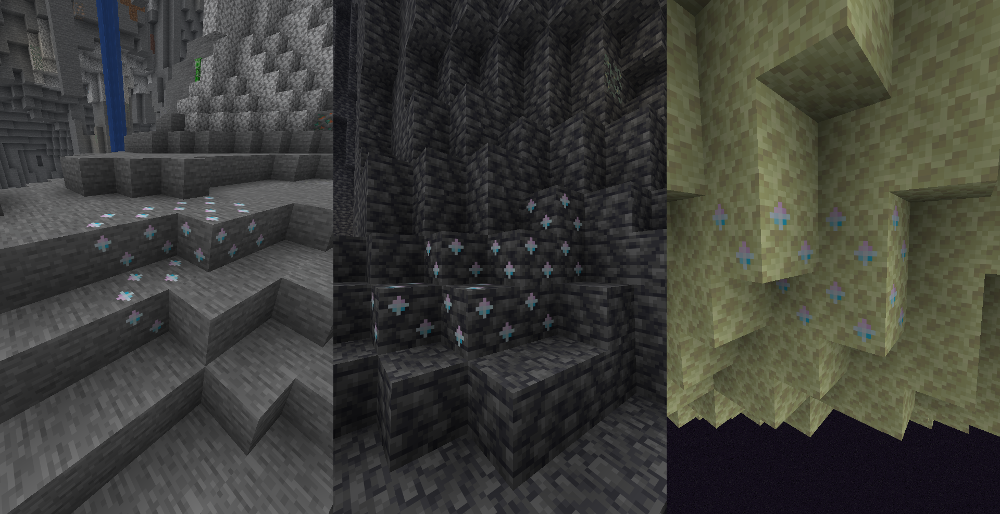
Ore Generation Stats:
| Property | Details |
|---|---|
| Vein Size | 12 blocks per vein |
| Frequency | 5 veins per chunk (Pretty common) |
| Drop Rate | Aproximatively 1–3 Primogems per block (without extra enchantments) |
| Required Tool | Iron Pickaxe tier or higher |
| Loot Table Drop | [Insert exact JSON drop table reference later] |
The moment you pick up your first Primogems, almost half of the mod's recipes will automatically unlock! More importantly, you gain access to crafting Sigils and exploring the Wish Mechanics, as well as unlocking the Pearlescent material building set.
Pearlescent Block Set
Pearlescent Blocks to be used for decorations.
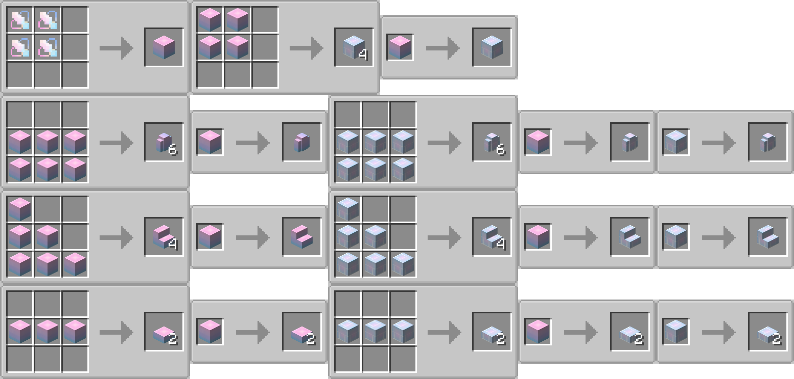
3. Weasel Thieves & Currency (Mora)
As you explore the overworld, you'll frequently encounter Weasel Thieves. These sneaky little creatures run away from players while making a very noticeable coin sound, so you'll need to catch them quickly!
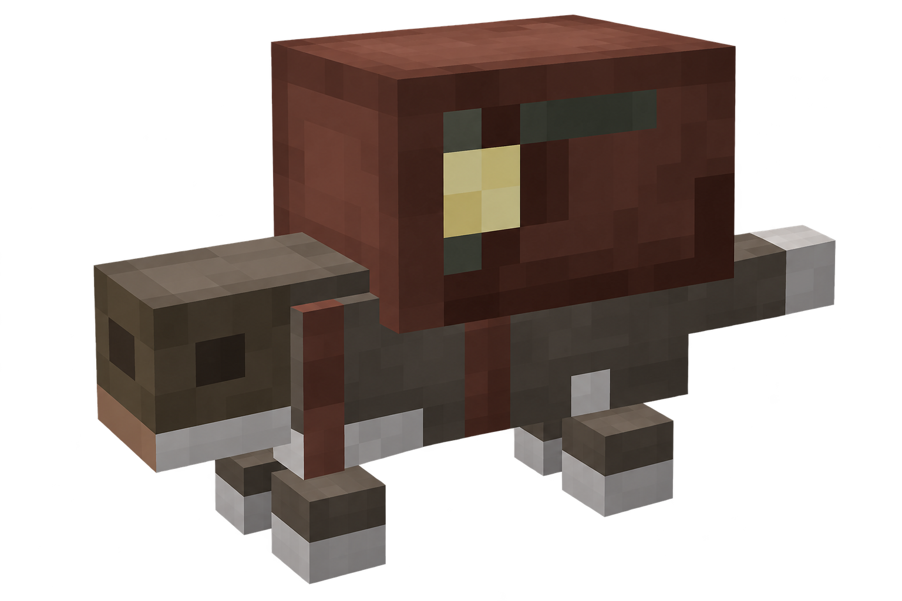
Weasel Thief
Creature · Peacefull · Overworld / The EndSpawns rarely anywhere in the Overworld or in The End Outer Islands - The Moon. Can spawn on any natural block in any biome except The Nether & The Main End Island. Have 60% chance to be Amateur (Default), 30% chance Hoarder (Rare) and 10% chance Golden (Legendary)
Flee from players within 16 blocks, runs at 1.2x speed near, 1.5x speed far. Drops Mora randomly on fleeing. If catched, can be traded with. Regardless of its small size, makes a very distint coin sound, so pretty easy to find.
Trades value depends on Weasel's Variant. The rarer the variant, the cooler trades are. Amateur trades something easy to find, but useful for SkyBlock or OneBlock playthroughs. Hoarder offers much more valuable items. Those can be useful even in an ordinary Survival. While Golden can trade some enchanted tools, elytras and even the Elemental Weapons.
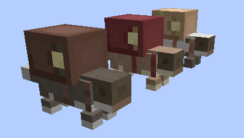
- Rarity Tiers & Spawn Chances:
- Amateur: 60% spawn chance
- Hoarder: 30% spawn chance
- Golden: 10% spawn chance
- Trading: Every Weasel features 9 randomized trades spanning pools for all 8 mod elements, plus a dedicated trade to convert Mora into Elemental Sigils.
- Amateur Weasels sell basic items useful for skyblock setups.
- Hoarder Weasels sell more valuable items helpful in normal survival worlds.
- Golden Weasels can sell enchanted tools and even powerful Elemental Weapons!
4. Crafting Sigils
If you are lucky enough early on, you can craft Sigils right away. They are made using Primogems combined with an elemental item (or standard dye if playing in dyeable data pack mode).
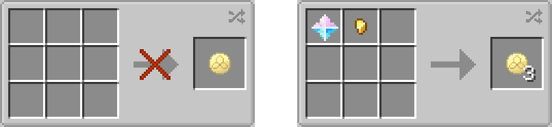
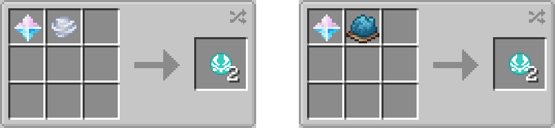
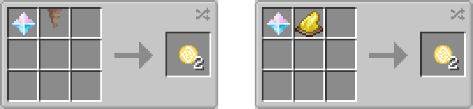
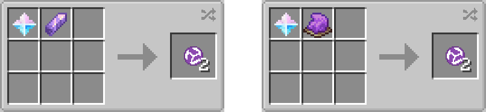
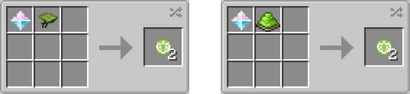
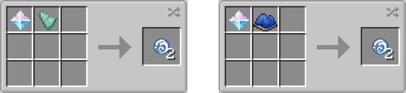
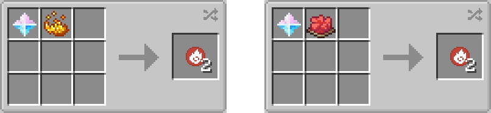
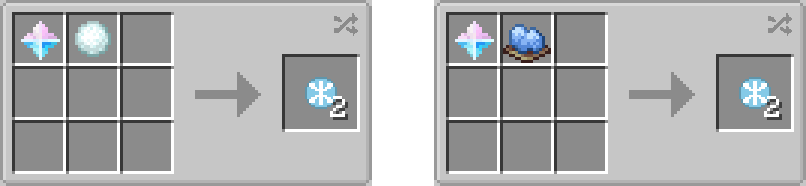
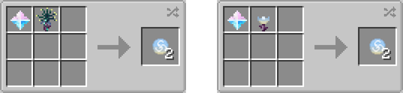
5. Next Steps: Progression & Exploration
Once you're geared up and have gathered your initial materials, you have two main paths to push deeper into the mod:
- Path A: Continue normal game progression to naturally reach The End.
- Path B: Venture out to find the Ancient Ruins structure, offering an alternative route to the End dimension.
To help you navigate these hazardous locations, make sure to craft yourself some helpful Utilities & Gear beforehand!
Showcasing the transition from Overworld mining to Ancient Ruins / The End.